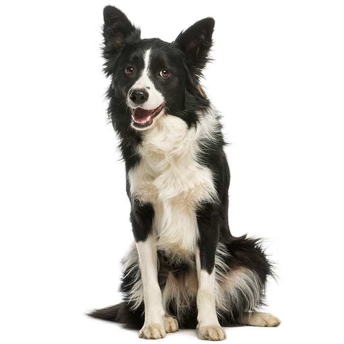
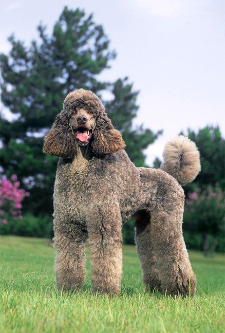
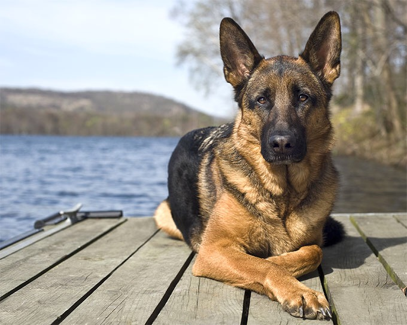

| First place | Border Collie |
|---|
The valedictorians of the dog
world, these herders took the top
spot in in Stanley Coren's
intelligence rankings, meaning
most can learn a new command in
under five seconds and follow it at
least 95% of the time.
Here you can find more information on YouTube:
Border Collie Documentary
| Second place | Poodle |
|---|
Nowadays you can adopt
cockapoos, whoodles and
goldendoodles, to name a few, but
breeders love regular, ol' poodles
for more than just their
hypoallergenic qualities. The curly
coated cuties also took the silver
medal for working intelligence in
Coren's survey.
Here you can find more information on YouTube:
Poodle Documentary
| Third place | German Shepherd |
|---|
German Shepherds happily
serve as police dogs, seeing eye
dogs, medical assistance dogs
and therapy dogs, so it's no
surprise that consistent obedience
comes standard with this breed.
Here you can find more information on YouTube:
German Shephed